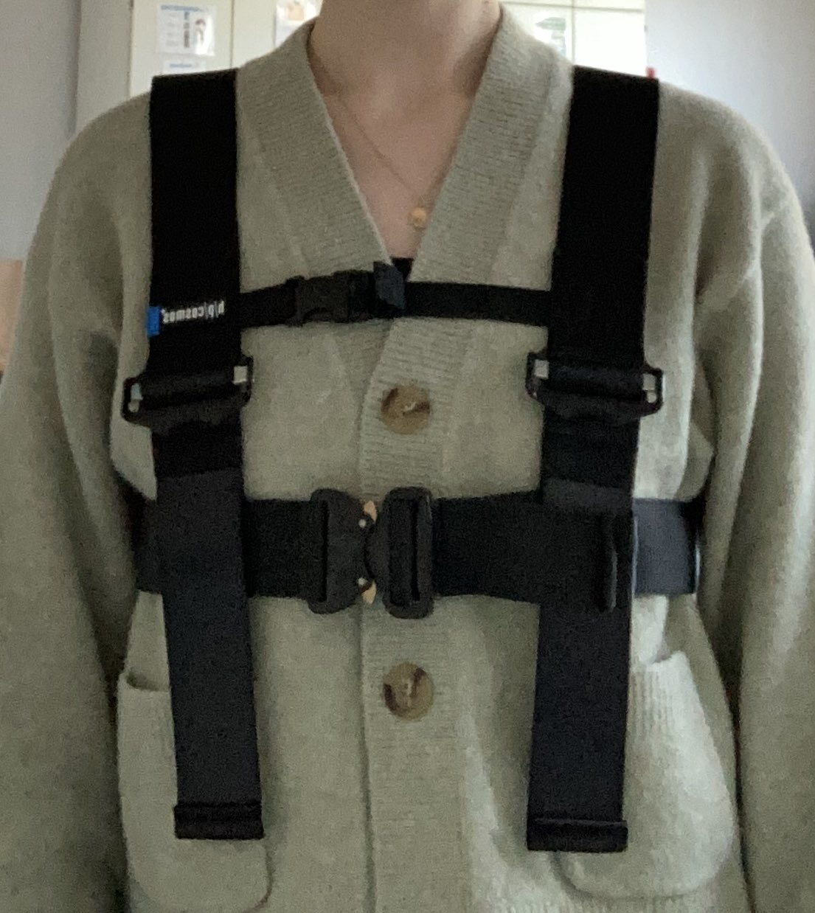

StepUp Newsletter Vol. 5
Hallo, wir freuen uns, Ihnen den fünften Newsletter vom StepuP Projekt präsentieren zu dürfen. In diesem Newsletter möchten wir über den aktuellen Stand des Projekts informieren und ein paar Neuerungen vorstellen, die es gegeben hat. Wir wünschen viel Spaß beim Lesen!
Aktueller Stand
Bisher konnten wir 21 T0-, 13 T1- und 5 T2-Termine durchführen. Nebenbei laufen natürlich auch die Trainingseinheiten. Generell arbeiten wir kontinuierlich daran, die Studie weiterzuentwickeln – einige der wichtigsten Neuerungen möchten wir Ihnen nun vorstellen.
Neuerungen
Zu Beginn der Studie haben wir mit einer 128-Kanal EEG-Haube gearbeitet, die mit Kabeln an das EEG-Gerät angeschlossen wurde. Mittlerweile haben wir auf ein neues EEG-System umgestellt, das zwei wesentliche Vorteile bietet:
- Schnellere Vorbereitung – Es besitzt nur die Hälfte der Elektroden.
- Mehr Bewegungsfreiheit – Dank Bluetooth-Technologie sind keine störenden Kabel mehr nötig.


Auch bei der Laufbandnutzung gibt es eine Verbesserung: Wir haben neue Sicherheitsgurte (evtl auch eine Abbildung einfügen?) angeschafft, die für mehr Beinfreiheit und einen besseren Armschwung sorgen. In unserer Studie gibt es ein häusliches Assessment, bei dem für 7 ganze Tage ein Sensor am unteren Rücken getragen wird. Eine weitere Änderung betrifft dieses häuslichen Assessment: Um mehr Kontext zu den erfassten Bewegungsdaten zu erhalten, geben wir nun ein Protokoll mit, in dem die Probanden und Probandinnen festhalten können, wann sie Ihre Parkinson-Medikation einnehmen und welche Aktivitäten sie ausführen. Zusätzlich bieten wir zwischen T1 und T2 eine neue Möglichkeit, aktiv zu bleiben: die Walking Tall App, die von unseren Partnern in Sydney, Australien, entwickelt wurde. Sie trainiert das Gehen zu einem Metronom-Takt. Da uns die Qualität der Studie besonders am Herzen liegt, evaluieren wir im Anschluss an den T1-Termin das Laufbandtraining und im Anschluss an den T2-Termin die allgemeine Zufriedenheit mit der Studie. Unser Forschungsprojekt ist weltweit einzigartig, da es Laufbandtraining bei Parkinson in einem klinischen Umfeld mit mobilem EEG untersucht – und das in mehreren Standorten über die Welt verteilt. Um zukünftige Studien weiterzuentwickeln, sind Rückmeldungen daher von unschätzbarem Wert.

Ausblick
Wir suchen weiterhin Probandinnen und Probanden. Falls Sie selbst teilnehmen möchten oder jemanden kennen, der interessiert sein könnte, melden Sie sich gerne bei uns. Bei Fragen oder zur Anmeldung kontaktieren Sie Julius Welzel oder unsere Studien-Mail: stepup@neurologie.uni-kiel.de. Vielen Dank für Ihr Interesse und Ihre Unterstützung! Herzliche Grüße Ihr StepuP Studien-Team
Mitarbeiter:in des Monats
In dieser Kategorie wollen wir Ihnen in jedem Newsletter Mitarbeitende vorstellen, die eine zentrale Rolle im StepuP Projekt einnehmen werden.
Vaishali Vinod
Vaishali hat einen Master-Abschluss in Medical Life Sciences und promoviert aktuell in der Arbeitseinheit von Professor Walter Maetzler. Ihre Forschung konzentriert sich auf das Verständnis von gangbezogenen EEG-Potenzialen bei Parkinson und die Bewertung der Gültigkeit von Vorverarbeitungsalgorithmen bei der Analyse von mobilen EEG-Daten. Vaishali ist bei vielen StepuP-Messungen und Trainings dabei und springt oft auch spontan ein. Sie ist vor allem für die technischen Abläufe zuständig und ist als Teil des StepuP-Teams nicht mehr wegzudenken.